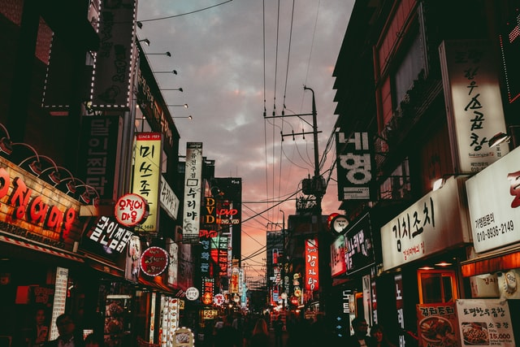

South Korea has a been a place I always wanted to visit again. I travelled to South Korea (S. Korea) for the first time when I was in 8th grade. Much of that time was spent visiting most of my relatives from my mom's side and my dad's side. For my next visit, I plan to travel more around the country to places I have yet to visit and experience.
I would want to go to one of the market streets in S. Korea because I have seen many videos and Korean variety/entertainment shows that display the sights of many foods that look delicious. Also, food from street food stalls do appear really affordable.
Korea is made up of many cities and provinces, and I was only exposed to urban and "suburban" areas around my relatives (Seoul, Incheon, Anyang). I did go to Jeju Island, but I want to go to Jeju Island again since it was really enjoyable and relaxing to visit. So, I would like to try visiting Busan, Daegu, and the traditional Korean village. Along with the cities, I would like to visit certain locations in S. Korea (like the traditional Korean village mentioned).
As of now, these are areas of where I would like to go
and experience in S. Korea from my knowledge. If I find more locations to visit
to, I would keep them on my bucket list.

Photo by
Saveliy Bobov
on
Unsplash
© 2020 Rachel Ahn
Updated: May 11, 2020